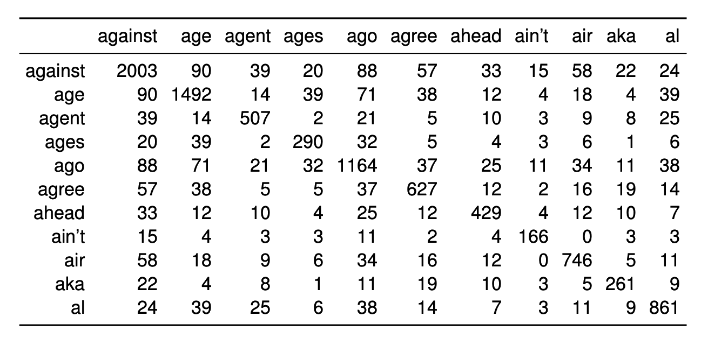

● Gendered word pairs ● Occupations — Faded dots show original positions; bright dots show steered positions. Trails show how each word moved.
Vocabulary:
A dictionary explains a word using other words — a human-readable representation. A word embedding explains a word using a list of numbers — a machine-readable representation. Rather than hand-coding these numbers, we learn them from data, so that words with similar meanings end up with similar numbers.
The learning principle behind word embeddings is the distributional hypothesis: a word's meaning can be inferred from the words it co-occurs with. To learn embeddings, we start with a text corpus and construct a word co-occurrence matrix, counting how often pairs of words co-occur within a given window.

Each row is a sparse, high-dimensional representation of a word. Words in similar contexts get similar rows, so there is some notion of similarity here, but the raw counts don't have much useful geometric structure — you can't do analogies on them, for example (more on analogies below).
Methods like word2vec and GloVe don't just compress the co-occurrence matrix. They learn low-dimensional vectors with approximately linear structure — the reason analogies work and the subspace methods in this article are possible.
In this article, we use 100-dimensional GloVe vectors trained on 6 billion tokens of text. All computations run in your browser.
Do embeddings capture meaningful structure? We can check by visualizing groups of related words.
Since our vectors are 100-dimensional, we project them to lower dimensions for plotting using MDS (multidimensional scaling), which finds a layout that best preserves pairwise distances. Use the eigenvalue bars to the right of each plot to switch between 1D, 2D, and 3D views. The percentage shows how much of the original distance structure is captured.
Adjective forms trace out parallel paths:
Digits and their word forms occupy distinct but parallel subspaces:
Written and numeric forms linked together:
These regularities give rise to word analogies. The vector difference between related word pairs is roughly constant:
$$\overrightarrow{\text{king}} - \overrightarrow{\text{man}} + \overrightarrow{\text{woman}} \approx \overrightarrow{\text{queen}}$$
More generally, if $w_1 : w_2 :: w_3 : w_4$, then $w_4 \approx w_2 - w_1 + w_3$.
The analogy examples hint at something deeper: the embedding space contains interpretable subspaces. The "gender direction" isn't just a pattern between a few word pairs — it's a consistent axis along which many words vary.
Given groups of word pairs that vary along some concept, we compute the covariance of their embeddings and extract the top-$k$ singular vectors via SVD. This gives us an orthogonal basis $\mathcal{B} = \{b_1, \dots, b_k\}$ for the subspace that best explains the variation within those groups.
Once we have a subspace, we can steer the embeddings by projecting it out:
$$\overrightarrow{w}_{\text{steered}} = \frac{\overrightarrow{w} - \overrightarrow{w}_{\mathcal{B}}}{\|\overrightarrow{w} - \overrightarrow{w}_{\mathcal{B}}\|} \quad \text{where} \quad \overrightarrow{w}_{\mathcal{B}} = \sum_{j=1}^{k} (\overrightarrow{w} \cdot \overrightarrow{b}_j) \, \overrightarrow{b}_j$$
This removes each word's component along the chosen subspace while preserving everything else.
We define a gender subspace using pronoun pairs. Press Steer to watch the embeddings shift as the gender direction is projected out:
Before steering, "man :: woman → doctor" yields "nurse." After, both directions yield "physician":
This article grew out of a homework assignment co-written with David Mueller for a machine learning course at Johns Hopkins University.
This article uses GloVe vectors